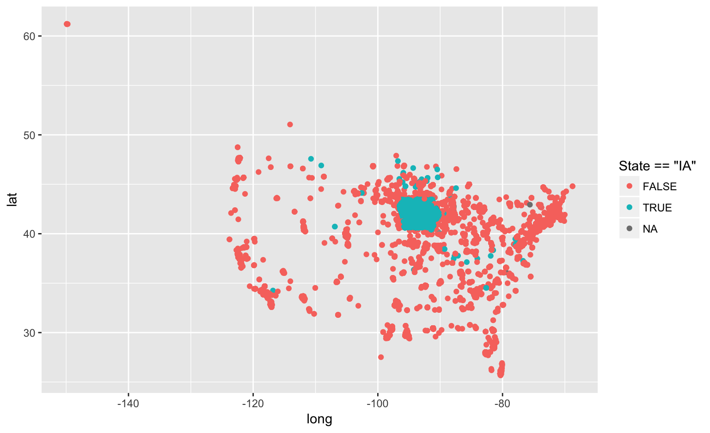

Stat 585 - tidyr your-turn solution
Heike Hofmann
Your Turn (5 min)

The Iowa Data Portal is a wealth of information on and about the State of Iowa.
The website Campaign Expenditures provides data on campaign expenditures. The code below reads the data into an R session.
url <- "https://data.iowa.gov/api/views/3adi-mht4/rows.csv"
campaign <- readr::read_csv(url)
Assess the ‘messiness’ of the data. List issues that prevent us from working with the data directly. Which of these issues are of type (1) or (2) of messiness?
Your Turn (10 min)
- Check the help for the function
parse_number in the readr package and use it on the campaign expenditure data.
- Use
separate to split the date variable into year, month and day.
- Use
separate again to extract geographic latitude and longitude (Hint - you might need several steps of separate)
- Using
dplyr functionality answer the following questions:
- What is the total amount of campaign expenditure?
- What is the single largest cost in the campaign expenditures?
- What time frame does the campaign expenditure cover?
- Plot geographic longitude and latitude. Do campaign expenditures stay in the State of IA? Investigate oddities.
Bit of background …
The first half of the Your-Turn is what we do to data, but the second half is why.
Any new data set we get, we first have to vet:
- find out about its background,
- get an idea of its quality by checking on (obvious) relationships,
- tidy into some normal form.
In the answer, we’ll combine elements of the first and second half.
Campaign expenditures
campaign <- campaign %>% mutate(
expenditure = readr::parse_number(`Expenditure Amount`)
)
summary(campaign$expenditure)
## Min. 1st Qu. Median Mean 3rd Qu. Max.
## -100000.0 50.0 197.2 1157.0 500.0 1479000.0
# total in millions of dollars:
sum(campaign$expenditure)/10^6
## [1] 392.1802
# sort largest to smallest:
campaign %>% arrange(desc(expenditure)) %>%
select(Date, `Receiving Organization Name`, expenditure)
## # A tibble: 338,821 × 3
## Date `Receiving Organization Name` expenditure
## <chr> <chr> <dbl>
## 1 12/31/2006 Non-candidate expenditures 1479313
## 2 10/22/2010 Strategic Media Services 1200000
## 3 10/27/2015 Citizens for Gronstal 1116971
## 4 06/02/2014 Media Ad Ventures, Inc. 881500
## 5 10/01/2014 Media Ad Ventures, Inc. 790000
## 6 09/30/2010 Media Strategies & Research 750000
## 7 05/05/2010 Chet Culver Committee 750000
## 8 10/25/2016 Iowa Democratic Party 750000
## 9 08/28/2014 Media Ad Ventures, Inc. 731500
## 10 10/15/2010 Strategic Media Services 710644
## # ... with 338,811 more rows
Time frame
campaign <- campaign %>%
separate(Date, into = c("Month", "Day", "Year"),
remove = FALSE) %>% # keep the original column
mutate(
Year = as.numeric(Year),
Month = as.numeric(Month),
Day = as.numeric(Day)
)
## # A tibble: 14 × 2
## Year n
## <dbl> <int>
## 1 2003 8769
## 2 2004 20401
## 3 2005 8831
## 4 2006 24264
## 5 2007 11814
## 6 2008 35490
## 7 2009 16462
## 8 2010 43999
## 9 2011 18348
## 10 2012 40930
## 11 2013 19139
## 12 2014 37221
## 13 2015 16866
## 14 2016 36287
Geographic Locations
campaign %>% select(`City Coordinates`) %>% glimpse()
## Observations: 338,821
## Variables: 1
## $ City Coordinates <chr> NA, "Kalona, IA 52247\n(41.503246789000059, -...
campaign <- campaign %>%
separate(`City Coordinates`, into = c("X", "coords"), sep="\n", remove=FALSE) %>%
separate(coords, into=c("whitespace", "lat", "long"), sep="[(),]") %>%
select(-X, -whitespace) %>% # throw out variables
mutate(
long = parse_number(long),
lat = parse_number(lat)
)
campaign %>% select(long, lat)
## # A tibble: 338,821 × 2
## long lat
## <dbl> <dbl>
## 1 NA NA
## 2 -91.71394 41.50325
## 3 -91.58601 41.68835
## 4 -93.77771 41.60756
## 5 -93.88112 42.06433
## 6 -92.64617 41.29066
## 7 -87.63412 41.89121
## 8 -91.51795 41.64851
## 9 -90.68454 42.51538
## 10 -90.20346 41.85439
## # ... with 338,811 more rows
Money is leaving Iowa
iowa <- map_data("state") %>% filter(region == "iowa")
ggplot(aes(x = long, y = lat), data = campaign) +
geom_path(data = iowa) +
geom_point(aes(x = long, y = lat, colour = State == "IA"))

Investigate oddities
there are points geographically outside the state with an Iowa address.
campaign <- campaign %>% mutate(
inIA = sp::point.in.polygon(long, lat, iowa$long, iowa$lat)
)
campaign %>% filter(!inIA, State == "IA") %>% dim()
## [1] 1018 23
campaign %>% filter(!inIA, State == "IA") %>% select(`City Coordinates`)
## # A tibble: 1,018 × 1
## `City Coordinates`
## <chr>
## 1 Chicago, IA 60654\n(41.891207985000051, -87.63411733099997)
## 2 NA, IA 55555\n(44.770556229000078, -93.921809549999978)
## 3 Chicago, IA 60654\n(41.89120798500005, -87.63411733099997)
## 4 --, IA 99999\n
## 5 NA, IA 55555\n(44.770556229000078, -93.921809549999978)
## 6 Carter, IA 51510\n(41.292079521000062, -95.915059097999972)
## 7 Carter, IA 51510\n(41.292079521000062, -95.915059097999972)
## 8 Des Moines, IA 55555\n(44.770556229000078, -93.921809549999978)
## 9 not applicable, IA 52800\n
## 10 Carter Lake, IA 51510\n(41.292079521000062, -95.915059097999972)
## # ... with 1,008 more rows
There is no Chicago in Iowa - particularly not, with a ZIP code of 60654.
387 records have a geographic location of (-93.92180955, 44.770556229). This is a location South West of Minneapolis, MN.
campaign %>% filter(!inIA, State == "IA") %>%
count(long, lat) %>% arrange(desc(n))
## Source: local data frame [92 x 3]
## Groups: long [92]
##
## long lat n
## <dbl> <dbl> <int>
## 1 -93.92181 44.77056 387
## 2 NA NA 313
## 3 -96.47678 42.55592 56
## 4 -96.05135 41.26347 33
## 5 -95.91506 41.29208 26
## 6 -90.49563 41.52590 26
## 7 -90.72330 41.45630 24
## 8 -95.91506 41.29064 15
## 9 -93.28102 45.25174 5
## 10 -73.93957 42.81424 5
## # ... with 82 more rows
… lots of these mis-located items have a date of the last day of the year:
campaign %>% filter(!inIA, State == "IA", round(long,5)==-93.92181) %>%
select(Date, `Committee Name`) %>% xtabs(data=., ~`Date`) %>% sort()
## Date
## 02/10/2009 05/14/2008 05/25/2012 06/12/2006 06/19/2010 06/23/2006
## 1 1 1 1 1 1
## 06/27/2010 07/30/2013 08/24/2010 09/19/2008 09/30/2012 10/04/2007
## 1 1 1 1 1 1
## 10/12/2010 10/13/2008 10/17/2010 10/18/2010 10/27/2012 07/14/2006
## 1 1 1 1 1 48
## 05/14/2006 10/14/2006 12/31/2006 12/31/2007
## 62 84 87 89
Does anybody have any ideas how to explain this? I’d love to hear from you!